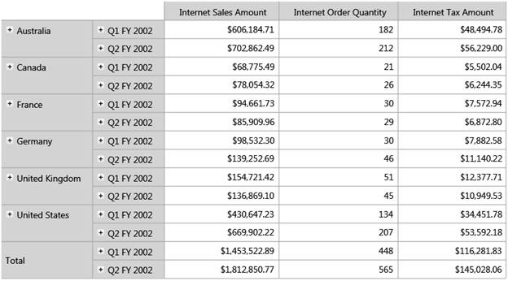

OlapGrid for Silverlight supports Drill Replace feature in which, the control would tend to display only the immediate child members and ancestors on drill-down and drill-up respectively.
 Note: In order to drill-down, the expander button
is clicked whereas, to drill-up the user needs to hold the shift key and click
on the header text (column or row header text).
Note: In order to drill-down, the expander button
is clicked whereas, to drill-up the user needs to hold the shift key and click
on the header text (column or row header text).
Property
|
Property |
Description |
Type |
Data Type |
Reference Link |
|
OlapReport.DrillReplace |
This property would turn on the Drill Replace feature of the control. |
CLR |
Boolean |
- |
Adding Drill Replace to an Application
Adding Drill Replace feature to the application is described in the following code snippet:
|
[C#]
// Enabling Drill Replace m_olapDataManager.CurrentReport.DrillReplace = true;
|
|
[VB]
// Enabling Drill Replace m_olapDataManager.CurrentReport.DrillReplace = True
|

Figure 13: Drill Replace:
For drill-down click the expander symbol and for
drill-up hold the shift key and click row header text (Ex: Shift key + left
click on text "Q1 FY 2002" to get back you to "H1 FY 2002")
Sample Link
A sample is available at the following locations:
Windows XP:
..\Syncfusion\EssentialStudio\<Versionnumber>\BI\Silverlight\Syncfusion.OlapGrid.Silverlight.Samples\Syncfusion.OlapGrid.Silverlight.Samples\Samples\DrillReplaceDemo
Windows 7/Vista:
C:\Users\<User Name>\AppData\Local\Syncfusion\EssentialStudio\x.x.x.x\BI\Silverlight\Syncfusion.OlapGrid.Silverlight.Samples\Syncfusion.OlapGrid.Silverlight.Samples\Samples\DrillReplaceDemo
Note: x.x.x.x refers to the current version of
Essential Studio.
1. Navigate to the project location and open the sample project.
2. Run the sample to view the desired output.